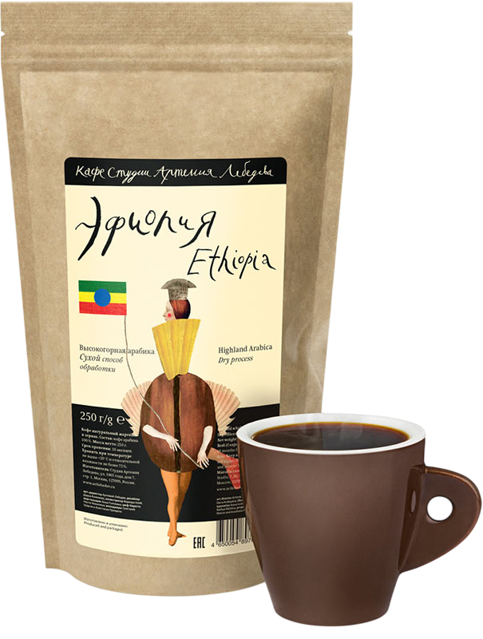

Эфиопский Йргачефф (Yirgacheffe)

* Нажмите на изображение для просмотра в полном размере
Описание
Этот кофе родом из Эфиопии, региона Йргачефф, который считается колыбелью кофе. Зерна относятся к мытой обработке, что придает напитку невероятную чистоту и яркость. В чашке вас ждет сложный букет с нотами жасмина, бергамота, лимона и меда. Легкое тело и элегантная кислинка делают этот сорт идеальным выбором для начала дня.
Характеристики:
- Страна: Эфиопия
- Регион: Yirgacheffe, Gedeo Zone
- Разновидность: Heirloom (местные сорта)
- Обработка: Мытая (Washed)
- Высота произрастания: 1700 - 2200 м
- Вкусовой профиль: Цитрус, жасмин, лимон, мед
- Обжарка: Средняя (подходит для фильтра и пуровера)